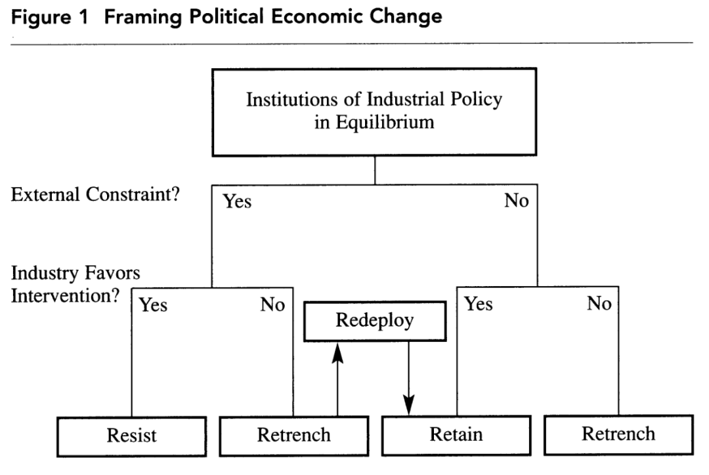

收录于合集
#《国际关系前沿》2021年第12期 22 个
#区域国别 9 个

作品简介
作者： 卢埃林· 休斯（Llewelyn Hughes），澳大利亚国立大学克劳福德公共政策学院副教授，日本政治科学副主编（2018-），亚太倡议零碳能源指导委员会成员。主要研究方向是全球供应链视角下的政府绿色产业政策及化石能源问题。
编译： 王星澳（国政学人编译员，上海国际问题研究院硕士研究生）
来源： Hughes, L. (2012). Climate Converts: Institutional Redeployment, Industrial Policy, and Public Investment in Energy in Japan. Journal of East Asian Studies , 12(1), 89-117. doi:10.1017/S1598240800007633
归档： 《国际关系前沿》2021年第12期，总第39期。
内容摘要
大量政治经济学领域的既有文献认为，发达工业国政府在削减产业政策的同时，仍在少数部门抵制改革。但本文认为，削减（retrenchment）和抵制（resistance）并不能完全概括政府的政策选择。通过分析日本能源政策中的投资，本文发现，除了削减产业政策、抵制减少产业计划的压力外，国内的行为体并没有受到自由化影响，而是选择了第三种政策，即保留并再调配公共政策领域的国家职能。
文章导读
大量的政治经济学文献表明，发达工业国政府已经将自身从经济市场中的主动参与者转为了被动监管者。日本属于典型的发展型国家，但自由化也是日本政治中的一个重要议题。学界认为，参与国际机构、受到美国施压以及受到国内企业游说是促成日本经济自由化转型的重要原因。有学者指出，这三种因素导致政府削减了制造业的部门计划。在许多部门，日本政府和社会经济行为体接受（甚至积极推动）经济自由化。然而，一些部门则抵制自由化，试图保护衰退的产业免受国际竞争。这一现象在日本的农业部门表现尤其突出。农业部门的贸易及投资壁垒下降的速度较制造业更慢。总之，有学者认为，日本政府参与了有组织的全球化进程。在此进程中，日本政府减少了对制造业的政府干预，并且持续地保护一部分部门。
本文认为，自由化对国内行为体的限制比“削减和抵制”假说所提出的更加碎化。通过分析日本在能源领域的政策投资可以看出，“削减”和“抵制”并未穷尽国内行为体的选择范围。除了不再采取工业政策或抵制减少工业计划的压力外，它们还将国家职能保留并重新调配到了能源部门，而这一部门基本没有受到自由化机制的影响。
本文的分析过程如下。首先，本文讨论了经济自由化的理论并引用了对逐渐削弱日本工业政策而言最重要的机制。然后，本文在介绍再调配的概念并将其与削减和抵制进行辨析的基础上，分析了法律、预算和雇佣的数据。由此证明存在国家资源的再调配，这种调配旨在维护能源安全及应对环境外部性（environmental externality），以及促进部门就业和增长。最后，本文将讨论以上发现及这一发现对理解日本的国家与市场之间关系的意义。
01
文献综述
在比较政治经济学中，学界愈发地普遍认为，发达工业国的政府在削减了大部分部门指向性政策的同时，却在某些部门抵制这种变革。削减政策并不简单地意味着政府规模缩小。相反，它改变了政府职能，使得政府职能愈发局限于监管和强制企业执行竞争条款。
对日本的研究证实了这一理论。关于日本战后政治经济的争论可以分为两个阶段。在第一阶段，学界认为产业政策是日本政治经济的核心特征。关于产业政策对于促进增长的效用，学界仍有争议。然而，学界对“日本政治经济的核心组成部分是针对制造业及其他部门的产业政策”这一观点几乎没有分歧。MITI（日本通产省，2001年改组为METI，日本经产省）负责制造业的协调利益及执行产业政策。MITI/METI的核心使命就是提升国家的产业竞争力。日本的产业政策应用了一套跨部门的标准政策，为战略性产业提供配额、关税、补贴、对内投资技术许可管控、放松竞争规则等一系列的支持。在战后的数年中，日本的产业政策致力于发展煤炭和钢铁产业，以助力经济复苏。在上世纪五十年代，为了提速经济和实现充分就业，产业政策的对象进一步涵盖了合成纤维、石化、汽车、造船、机器部件及电子产品等产业。
在第二个阶段，学者们开始争论政府究竟是放弃了产业政策的应用还是在一部分部门抵制自由化。产业政策受到了三种机制的削弱，而这每一种机制都降低了进入日本经济的门槛。第一，日本参加的管理贸易和资本流动的国际机制，包括GATT、OECD、IMF。这使得日本加入了管理货物贸易、服务贸易和资本流动的多边规则，限制了日本使用提高行业竞争力的工具。经过不断进行的谈判，日本解除了贸易壁垒，各产品类别的关税得以显著下降。最显著的贸易自由化发生于1961年；1982年东京回合谈判结束时日本平均关税税率为4%。随着日本加入IMF，资本管制也有所减少。日本根据IMF第八条款规定，于1964年放开了外汇交易，并逐步放松了对资本交易的控制，进一步削弱了政府支持特定产业的能力。
第二，来自双边贸易伙伴的压力。日本政府受到的最大压力来自美国。美国限制了日本指向性制造业政策所扶持的对象产业范围。美国政府还利用双边及多边谈判要求日本政府削减市场准入壁垒。美国在20世纪50年代开始限制日本政府在纺织业推行产业政策，后来这种限制又扩展到了钢铁、半导体和汽车等行业。通过达成《结构性障碍倡议（Structural Impediments Initiative）》（该协议解决了土地使用政策、竞争政策和美国当局认为的日本市场准入壁垒的问题）及《放松管制和竞争政策倡议（Enhanced Initiative on Deregulation and Competition Policy）》，两国的协商得以正式化。
第三，日本经济自身的变化。在资本短缺的情况下，经营产业政策所扶持产业的企业之间可能开展合作。但是，由于受到遵守IMF规定及企业要求日元升值的双重压力，日本政府降低了资本流动壁垒，而这使得企业对国内资本的依赖程度降低了。换言之，具有国际竞争力的企业对政府政策支持的依赖降低了。在资本市场封闭的情况下，以银行为中心的金融曾是日本产业政策的标志；但如今，银行在企业融资中所占的份额大幅下降了。随着高技术领域电子消费品企业的国际化，优势企业出于竞争的需要也并不完全遵守MITI/METI的产业规划，其对公共财政和保护的依赖也降低了。
02
制度变革的模式：削减、抵制或保留及再调配
第一，削减模式。经济自由化是一种制度现象，它意味着管理经济市场的法律、法规和政策发生了变化。因而，削减与部门增长政策相关法律的改变及产业政策工具对象经济部门的减少密切相关。负责实施制造业产业政策的领导部门的内部结构变化进一步支持了这一假说。相较于关注宏观经济政策和贸易的国内机构，关注特定经济部门的机构数量逐渐减少了。尤其是，随着2001年日本各省和机构的改组，管理特定经济部门的机构被合并，同时处理宏观经济和贸易政策的横向机构扩张了。
第二，抵制模式。有学者指出，立法者、技术官僚和农民的联盟减缓了农业领域的自由化。还有学者发现，美国迫使（日本政府）削减产业政策的施压一度得到了日本国内的联盟支持，但在零售业等与日本国内利益有巨大冲突的领域，施压取得的成果极为有限。随着时间变化，这种施压使得国内联盟转而支持保护在国际上竞争力较低的公司和产业。
第三，保留及再调配模式。本文认为在日本的制度变革中，除了削减和抵制外，还有保留及再调配的模式。 再 调配指的是“制定新目标或将新团体纳入建立机制的联盟中”。 因为自由化的压力是分散的，所以再调配是可行的。这意味着， 在不受自由化影响机制影响的领域，支持特定行业的干预政策仍是可行的。 这还意味着，尽管政府可能为了应对外部和内部政治压力而削减部门目标，但它们还可以保留并重新部署资源，制定有利于特定部门的公共政策。在特定的经济部门不受削减机制的影响时，或者当利益相关联盟依然存在且希望政府继续干预时，政府可能选择保留及再调配。
如何区分削减、抵制和再调配？如前所述，“削减”同减少或废除产业政策机构及负责设计和执行的组织联系在一起，意味着将资源重新分配给独立的监管机构及其他负责管理竞争的组织。“抵制”则意味着那些支持继续干预的人能够成功抵制自由化进程。从经验角度看，这应该与维持旨在推进部门增长的机构以及不断应用为达到这一目的而分配的资源有关。相较而言，“再调配”意味着对那些不受自由化机制影响的计划部门，国内行为体联盟还有另一种选择：保留部门计划，但转移人力、预算、机构资源到政府活动之外的领域。图一概述了这一观点并将其与削减及抵制的结果进行了对比。

03
总结与讨论
发达工业国在上世纪八十和九十年代实施了广泛的经济自由化计划。学者们注意到，在加入国际机构、受到美国施压以及企业对国家支持的依赖减少这三大因素影响下，日本政府同样大幅减少了对特定经济部门的支持。然而，本文提出的证据表明，日本产业政策的变化模式不仅仅是削减（产业政策）和抵制自由化。本文展现的预算、就业和法律及政策方面的数据表明，负责设计产业政策的领导机关保留了组织资源并将其重新调配至能源部门。
这种保留及再调配的过程并非不受自由化因素的影响。例如，为提高能源部门企业的竞争力而采取的措施可能同WTO规则相冲突。再调配至能源领域意味着现有政策对市场干预的扩大，而非是选择一个全新的政策领域。这说明， 再调配受历史遗产的限制， 有能力支持工业政策的组织选择拓展至能源部门这样已经具有制度能力的部门，而非是选择一个全新的领域。
日本政府继续干预能源部门的理由最初和管理外部性联系在一起，而其中最重要的是保证能源供应安全和减少温室气体排放。然而，本文已经表明，国家干预的必要性日渐凸显，包括促进经济增长和增加就业。将资源保留并再部署至能源部门对资源分配也产生了重要影响， 这导致了日本在再能源技术研究、开发和部署方面的公共投资比例高于其他先进工业国， 而在上世纪八十和九十年代油价下跌时其他工业国也比日本更大幅度地减少了公共投资。这也意味着产业政策的主管部门保留了很大一部分国家预算，有数十亿日元转移至能源领域的企业。
值得注意的是，作为一种发展策略，公共支出的有效性仍存在争议。案例研究表明，公共投资对光伏及汽车产业产生了混合的效应；然而，在与气候变化相关的技术领域，日本公司在全球专利注册的份额很高： 在13个与气候变化相关的专利注册类别中，日本公司在12个类别中排名第一， 在其他类别（生物质）中排名第二。虽然还需要进一步的研究，但日本公司在与气候变化有关的专利注册方面的主导性地位表明，至少在能源研究、开发和部署方面，更高的公共投资与公司竞争力之间存在因果关系。
研究结果还表明， 影响削减部门计划的因素比设想的更分散。 政府和社会经济行为体不是简单地削减（产业政策）或抵制变革的压力，而是将资源保留并再调配至不受自由化特定因素影响的部门。事实上，今天先进工业国的政府都在通过投资太阳能、风能和核能等可再生能源，以及汽车、交通、建筑和大型工业用户等需求领域的方式干预本国能源部门，以提升本国能源产业的竞争力。例如，各国旨在缓解和适应气候变化的能源研究、开发和部署的支出每年高达数百亿美元。再如，2009年的一项评估发现，G20成员国2.8万亿美元财政支出中的约15%（4,200亿美元）被用于减少温室气体排放。
各国政府再度干预能源部门反映出人们在应对气候变化问题上的共识。然而，它也表明，各国政府不仅保留了干预的能力，而且在选择如何促进特定行业或技术时，还将目光投向国外，借鉴国际上采用的成功政策。这些措施可能会导致政府削减政策，而政府也可能会相互学习和仿效，增加对能源部门的干预以促进部门增长和就业。
译者评述
本文是对既有理论的一种补充与完善，属于“站在巨人的肩膀上”拓展人类知识边界的研究成果。因而，本文的写作模式和思路还是值得大部分国际关系学习者效仿的。本文在扎实的文献基础上，发现对日本产业政策与自由化关系的既有研究无法解释日本在能源领域加强了政府调控这一事实。基于这一问题，本文提出了“保留及再调配”的假设来解释这一现象，指出受到自由化因素影响，政府产业政策的变化除了削减与抵制外，还存在着保留及再部署的第三种选择，并且对这一假设的适用条件以及同既有研究中的“削减”、“抵制”之间的关系进行了论述。在此基础上，本文利用预算、人员以及法律法规三个方面的数据，补充论证了日本政府在能源产业的资源再调配，以加强本文的假设。本文指出，日本等国将资源重新调配至能源部门的目的在于维护能源安全及应对环境外部性，以及促进部门就业和增长。文章有助于我们加深对于政府调控产业原因的理解，指出了日本产业政策的积极效应，是对新自由主义经济学排斥政府干预的一种反思。
本文的不足之处在于，“再调配”这一概念实质上是为日本政府推行产业政策的原因套了一个好看的“帽子”，而文章篇幅的一大部分旨在证明这个帽子“存在”。而且，文章对于再调配模式的适用条件的论述也显得较为简略。
在战后日本的经济恢复期，日本政府借助产业政策及配套的外汇管理政策发展重点产业，带动了国民经济的快速复苏。此后更是在政府的产业政策支持下一举成为半导体大国。经过长年的技术积累，日本在光刻胶领域至今依旧保持着垄断性的地位。不过，受到高龄少子化与经济低迷的恶性循环影响，加之受到来自中国等新兴技术大国的科技和人才竞争，当今的日本在数字化产业转型面领着严重的困境。对于中国而言，关注日本此轮产业转型同样具有重要意义。第七次全国人口普查公报的数据显示，较上一次人口普查（0.57%），中国的人口年均增长率再度下降，仅为0.53%。按照这样的发展趋势，在不久的将来中国也将面临人口老龄化的种种问题。因而在新一轮挑战下，日本的产业政策会进行怎样的调整，日本政府会如何解决人才严重匮乏的困境，值得我们持续关注和学习。
词汇整理
（关贸总协定）东京回合谈判 Tokyo Round
节省、删除 Retrenchment
产业政策 Industrial policy
环境外部性 Environmental externality
责编 | 王星澳 钱靓 李博轩
排版 | 王慧瑜 云琪布日
文章观点不代表本平台观点，本平台评译分享的文章均出于专业学习之用, 不以任何盈利为目的，内容主要呈现对原文的介绍，原文内容请通过各高校购买的数据库自行下载。

国政学人
支持学术公益与知识传播
微信扫一扫赞赏作者 __赞赏
已喜欢，对作者说句悄悄话
取消 __
发送给作者
发送
最多40字，当前共字
上一页 1/3 下一页
长按二维码向我转账
支持学术公益与知识传播
受苹果公司新规定影响，微信 iOS 版的赞赏功能被关闭，可通过二维码转账支持公众号。